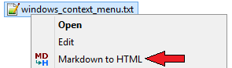
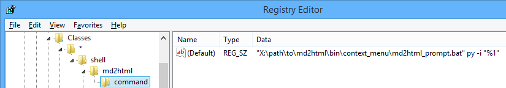

HomeInstallationUsageIndex
HomeInstallationUsageIndex GitHub
</>
GitHub
</>
Usage
This section describes running the program and configuring writing projects. Content writing, formatting, and structuring are described in the other sections.
The Java and the Python executables are platform-independent, so they should work in all environments where the corresponding runtimes are installed. The program was tested on:
The examples in this documentation are mostly given for Windows, but they may be easily adapted for Unix-like platforms. Some Unix-specific notes are provided when required.
A simple usage example for the Python version is:
>python %MD2HTML_HOME%/python/md2html.py -i test.txtand for the Java version is:
>java -jar %MD2HTML_HOME%/java/target/md2html-bin.jar -i test.txtBoth commands will convert file test.txt into file test.html using default parameters.
Note
The above commands illustrate the main idea of the program usage, but more convenient ways are described below in this section.
The program has many more command line options that are listed and described on the reference page.
There are two ways to use the program:
This mode accepts all required parameters in the command line and allows processing one document
per run (unless the GLOB argument is used). It's selected when
the --argument-file argument is not specified.
The --argument-file argument defines the argument file that will be used for processing.
Here's the example that executes the argument file with name md2html_args.json:
>python %MD2HTML_HOME%/python/md2html.py --argument-file md2html_args.jsonThe argument file allows defining:
Here is a very simple example of an argument file:
{
"documents": [
{ "input": "index.txt", "title": "Home" },
{ "input": "about.txt", "output": "about.html", "title": "About" }
]
}It's similar to using command line arguments, except it defines several documents to process.
A more complex example and the argument file structure are described in the reference page.
Note
The command line and the argument file may specify different values for the parameters that mean the same (sometimes they have different names). In this case the command line arguments will override the corresponding parameters in the argument file.
The program versions (Python and Java) are supposed to work independently and require only their corresponding runtime. For example, the Java version should work even if there's no Python in the environment where it runs. For different auxiliary purposes, command scripts for Windows and Unix-like platforms are used. Here are the scripts that run the program:
| For Windows | For Unix-like | Description |
|---|---|---|
generate_doc_py.bat |
generate_doc_py |
Uses the Python version |
generate_doc_java.bat |
generate_doc_java |
Uses the Java version |
The Windows versions may be run by double-clicking in Windows Explorer. The Linux Bash script versions may need special environment adjustments (depending on the Linux distribution) to behave the same way. In Ubuntu these scripts were tested only in the command line terminal.
These scripts execute the argument file md2html_args.json in the current working directory.
When double-clicked in Windows, they will open a command window and close it when they
successfully complete. If there are errors, the command window will stay open with the
information and error messages displayed.
These scripts are very small and intended to be copied to a project's directory where they will process the project's argument file (see the recommended project structure).
The program may be integrated into the Windows Explorer context menu:

This may be a quick and convenient way to convert single documents.
The "no prompt" version generates HTML from the selected file with default options. It leaves
the command window open only in case of errors. The other version opens a command line window and
allows redefining some options. Just pressing Enter will start generation with the default
options.
To add these context menu items, open the Windows Registry editor (press Win+R, type regedit
and press Enter) and add the following keys and values:
[HKEY_CURRENT_USER\Software\Classes\*\shell\md2html]
@="Markdown to HTML..."
"icon"="\"X:\\path\\to\\md2html\\bin\\context_menu\\icon.ico"
[HKEY_CURRENT_USER\Software\Classes\*\shell\md2html\command]
@="\"\"X:\\path\\to\\md2html\\bin\\context_menu\\md2html_prompt.bat\" -i \"%1\""
[HKEY_CURRENT_USER\Software\Classes\*\shell\md2html_fast]
@="Markdown to HTML (no prompt)"
"icon"="\"X:\\path\\to\\md2html\\bin\\context_menu\\icon.ico"
[HKEY_CURRENT_USER\Software\Classes\*\shell\md2html_fast\command]
@="\"X:\\path\\to\\md2html\\bin\\context_menu\\md2html_prompt_fast.bat\" -i \"%1\""Here @ stands for (Default) value name. py or java may be added before -i argument.
The quotes must be set like this:

There is a Windows command line script that automates this operation. Open a Windows console and execute:
>%MD2HTML_HOME%\bin\context_menu\generate_reg_file.bat
The output file is: C:\Users\user1\md2html_context_menu_integration.regFind the generated file in the user's profile directory, check and execute it (by double-click). Read the pop-up message and confirm the operation.
Note
There's no such integration for Linux and macOS.
The program doesn't impose restrictions on the writing project structure. The following structure is just a suggested approach that is used in this documentation.
Note that there's the quick start script that automatically creates a small project with a structure like this. The following description may be used for manual project setup.
$ tree -L 2 --charset=ascii --dirsfirst
.
|-- doc
| |-- content
| | |-- doc1.html
| | `-- doc2.html
| |-- layout
| | `-- <...>
| |-- pict
| | |-- image1.png
| | `-- image2.png
| |-- themes
| | `-- light
| | `-- <...>
| |-- favicon.png
| `-- custom.css
|-- doc_src
| |-- templates
| | `-- multipage.html
| |-- doc1.txt
| `-- doc2.txt
|-- doc0.html
|-- doc0.txt
|-- generate_doc_py.bat
`-- md2html_args.jsondoc0.txt and doc0.html are the Markdown document and its corresponding generated HTML
page that we want to have in the project's root.
Hint
It may be convenient to have a starting page in the project's root directory. But this page, on the other hand, requires special manipulation, so this decision is a trade-off.
the doc directory along with the doc0.html file contains the whole project's HTML
content with all required resources like images and CSS files.
This directory may be used and shipped autonomously (with additional doc0.html file
if it's used).
Note
For this documentation and projects generated by the quick start script this is not true. As the pages have links to their source texts, if we want these links to work, we need to ship the source texts as well.
As can be seen, the doc directory is a ready-to-use setup containing all necessary
artifacts, such as CSS, JavaScript and images. Only the HTML content needs to be generated
and placed here (see below).
the doc/content directory is intended to contain the generated artifacts only. In case of
issues with document generation, this directory may be safely deleted. On the following
project regeneration, this directory and its content will be recreated.
See also Troubleshooting.
Important
If unsure, please use renaming instead of deletion, or use a version control system (like Git) to avoid data loss.
the doc_src directory contains all source files required for producing the project's
output (plus the doc0.txt file if we use it)
the templates subdirectory contains the templates used for the HTML content generation
Note
Templates are not actually user written artifacts, but they also don't belong to the
doc directory because they are not required for the writing project viewing. Here we
probably see an imperfect structure design that might be revised (and ir is planned),
but still this structure is surely workable, and the users may easily redefine it
in their writing projects.
generate_doc_py.bat — the double-click script for the HTML output generation. Here
the Python version is demonstrated. See here for the other variations
md2html_args.json — the project's argument file;
doc/layout directory contains the resources that are used by the template. It's a
convenient way to separate those resources from the ones that belong to the writing
project content. This directory may be copied to a new project, and it will most likely work
(in conjunction with the particular template)
doc/themes directory contains the color themes used by
the project. More than one theme may be used at the same time
favicon.png file is placed here because it's considered a project artifact
custom.css is intended to contain the styles specific to the project (if required)
By layout we mean the whole set of artifacts used for generating the writing project results and not belonging to the user-created content. Applying to the recommended project structure the layout artifacts are:
doc/layout directory, except the content subdirectory;doc/themes directory — only the used scheme(s) are required;doc_src/templates directory — only the used templates are required.The layout is a relatively independent part of the M2H project. Currently, newer versions of the program work well with older versions of the layout.
The quick start script copies the layout artifacts from the M2H home directory to the new writing project. This approach keeps the users' projects independent of the changes made in the M2H project. When a newer version of M2H provides desired layout changes or fixes, the writing project's layout may be updated manually. Here are the suggested steps for that:
-f/--force flag.